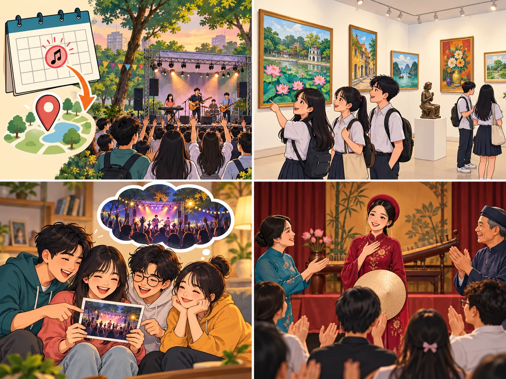
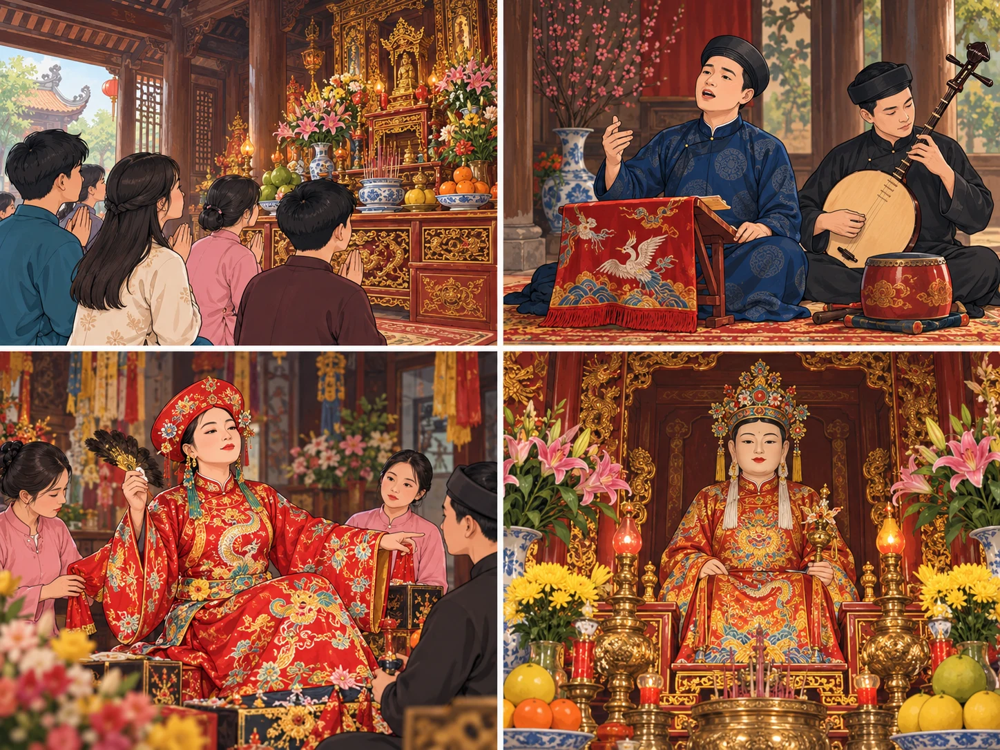
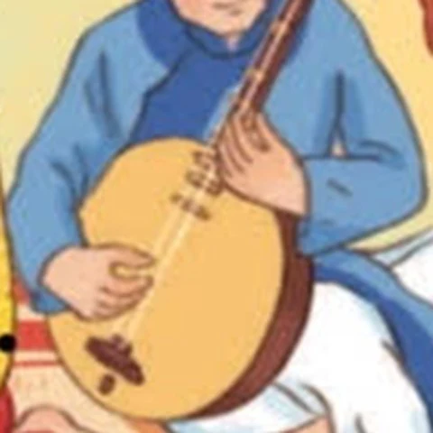
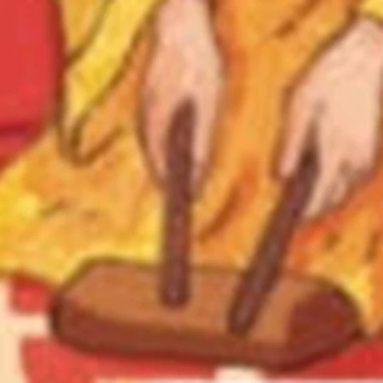
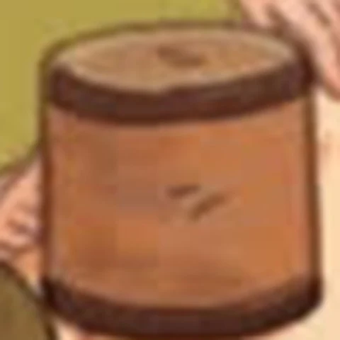
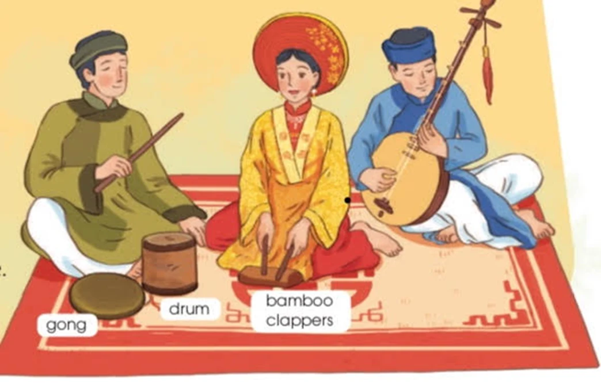

Communication and Culture
Lesson 7 · Suggestions · Vietnamese traditional music
♫
Today I can…
01 Make and respond to suggestions.
02 Identify chau van singing and other types of traditional music in Viet Nam.
Guess the traditional music
- Watch a 30-second video.
- Choose A, B, C or D.
- Check the answer together.
6 rounds · 4 choices each
Guess the traditional music
Choose an answer.
Guess the traditional music
Choose an answer.
Guess the traditional music
Choose an answer.
Guess the traditional music
Choose an answer.
Guess the traditional music
Choose an answer.
Guess the traditional music
Choose an answer.
Seven types of traditional music
- Tuong
- Cai luong
- Cheo
- Ca tru
- Xam
- Quan ho
- Chau van
Today’s culture focus: chau van singing.
Everyday English
Make and respond to suggestions
Complete the conversation
Use these four phrases.
- A. How about
- B. I’d love to
- C. Shall
- D. Let’s
Ann and Mai · 1–2
Ann and Mai · 2–3
Ann and Mai · 4
Check, then practise in pairs
(1) C. Shall we do something together?
(2) Yes, B. I’d love to.
(3) A. How about going to a music show?
(4) D. Let’s go to the Saturday show.
Make, accept or refuse?
Phrase 1 / 12
Make suggestions
- Shall we…?
- Why don’t we…?
- How about…?
- Let’s…
Accept
- Yes, I’d love to.
- That’s a good idea.
- Sounds great.
- Sure, why not?
Refuse
- I don’t feel like it.
- I really want to…, but…
- Sorry, I can’t.
- I’m afraid I’m busy then.
Make suggestions and respond
- go to the cinema
- take photobooth pictures
- go to a music show
- get bubble tea
A: Shall we go to the cinema this Saturday?
B: That’s a good idea.
Or: I really want to, but I have extra classes.
Make suggestions and respond
- sing karaoke
- play badminton
- have hotpot
- go to the bookshop
A: Shall we go to the cinema this Saturday?
B: That’s a good idea.
Or: I really want to, but I have extra classes.
Chau van singing
Words and instruments · Culture

praise
(v)/preɪz/say that you approve of and admire somebody or something
ca ngợi, khen ngợiPeople praise the singers after the performance.
chanting
(n)/ˈtʃɑːntɪŋ/singing a prayer or song to a simple tune
vịnh xướng, khấn nguyệnSlow chanting is part of hat tho.psychic
(n)/ˈsaɪkɪk/a person believed to have special powers and to speak with gods and spirits
bà đồng, ông đồngIn hat hau, a psychic sings and dances.saint
(n)/seɪnt/a very holy person who people respect and worship
vị thánh, thần linhThe performer’s costume represents a god or a saint.ancient
(adj)/ˈeɪnʃənt/very old; having existed for a very long time
cổ xưaChau van is an ancient form of Vietnamese performance art.typical
(adj)/ˈtɪpɪkl/having the usual features of a particular type
tiêu biểu, điển hìnhHat tho is a typical type of chau van singing.rank
(n)/ræŋk/the position that somebody has in an organisation or society
cấp bậc, địa vịThe costume depends on the rank of the god or saint.worship
(v)/ˈwɜːʃɪp/show respect and love for a god
thờ cúngPeople worship gods and saints at the temple.costume
(n)/ˈkɒstjuːm/clothes worn for a performance
trang phục biểu diễnThe performer wears a colourful costume, hat and belt.Instruments in chau van singing


Instruments in chau van singing

Read and discover
Culture · Page 35 · Complete the mind map
An ancient performance art
Chau van singing is an ancient form of Vietnamese performance art which combines singing and dancing. It started in the Northern Delta region of Viet Nam around the 16th century, and later spread to all parts of the country. It is used to praise gods or national heroes.
Two types of chau van singing
There are several types of chau van singing. One typical type is hat tho or worship singing – the slow chanting including an act of worship. Another type is hat hau – the singing and dancing of a psychic.
Music and costumes
The main musical instruments used in chau van performance are the moon-shaped lute, bamboo clappers, drum, and gong.

Costumes and cultural recognition
The costumes of chau van performers are very important. The style of clothes, hats, and belts depends on the rank of the gods or saints the performers worship. It has changed over time, but the rules about the colours have stayed the same.
As a form of traditional performance art, chau van singing was recognised as part of Vietnamese national culture.
Origin and types
Origin
around the 16th century · Northern Delta region of Viet NamTypes
hat tho: worship singing, with slow chantinghat hau: singing and dancing of a psychic
Instruments and costumes
Main instruments
moon-shaped lute · bamboo clappers · drum · gongCostumes
clothes · hats · beltsWhat do you find most interesting about chau van singing?
I find … most interesting because …
I was surprised that … · What impressed me most was …
Example What I find most fantastic about chau van is that the psychic’s costumes are very colourful, and the style of clothes, hats and belts depends on the rank of the gods or saints.
Give and Take Points
Close your books · 2 teams · 8 questions
Answer, choose, then open the card
- Teams A and B take turns. Choose a number.
- Answer correctly in 20 seconds.
- Choose GIVE to the other team or TAKE for your team.
- Then reveal the card: points can be positive or negative!
Today I can…
✓ Make and respond to suggestions.
✓ Identify chau van singing and other types of traditional music in Viet Nam.
Keep learning after class
- Do the exercises in your workbook.
- Prepare Looking back and Project — pages 36–37.